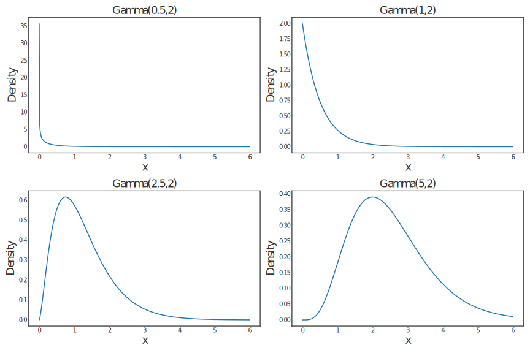
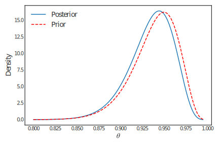
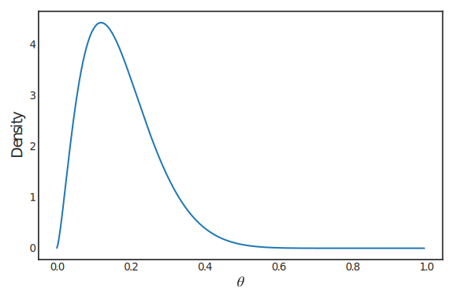
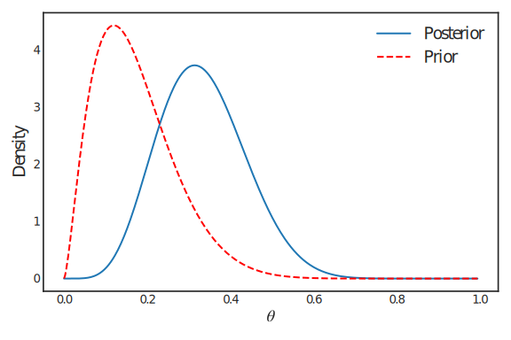
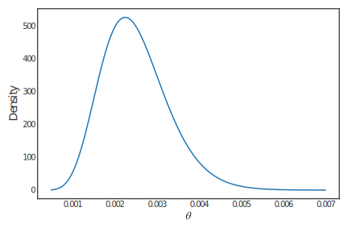
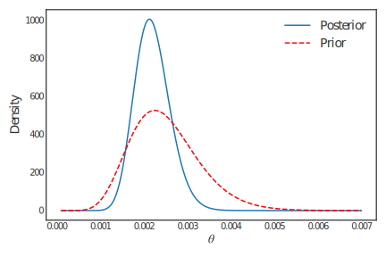
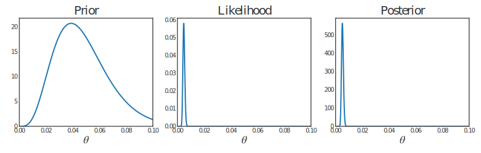
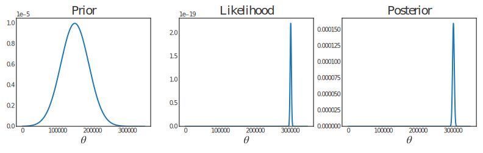
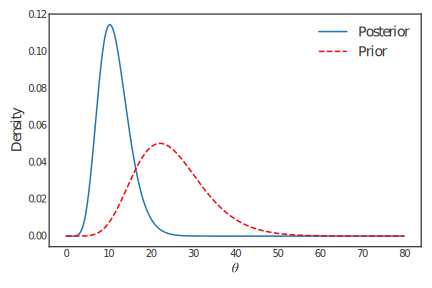
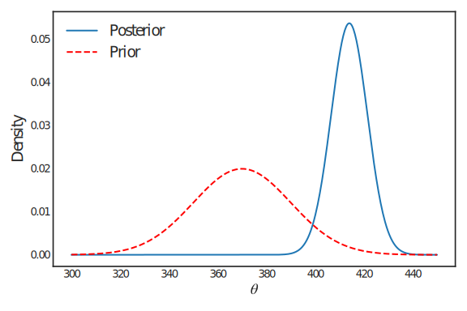

Chapter 2: Bayes Theorem for Distributions#
Section 2.1: Introduction#
Suppose we have data \(\underline{x}\) which we model using the probability (density) function \(f(\underline{x}|\theta)\), which depends on a single parameter \(\theta\). Once we have observed the data, \(f(\underline{x}|\theta)\) is the likelihood function for \(\theta\) and is a function of \(\theta\) (for fixed \(\underline{x}\)) rather than of \(\underline{x}\) (for fixed \(\theta\)).
Also, suppose we have prior beliefs about likely values of \(\theta\) expressed by a probability (density) function \(\pi(\theta)\). We can combine both pieces of information using the following version of Bayes Theorem. The resulting distribution for \(\theta\) is called the posterior distribution for \(\theta\) as it expresses our beliefs about \(\theta\) after seeing the data. It summarises all our current knowledge about the parameter \(\theta\).
Bayes Theorem {#bayes-theorem .unnumbered}#
The posterior probability (density) function for \(\theta\) is
where
Notice that, as \(f(\underline{x})\) is not a function of \(\theta\), Bayes Theorem can be rewritten as
Thus, to obtain the posterior distribution, we need:
data, from which we can form the likelihood \(f(\underline{x}|\theta)\), and
a suitable distribution, \(\pi(\theta)\), that represents our prior beliefs about \(\theta\).
You should now be comfortable with how to obtain the likelihood. But how do we specify a prior (point 2)? In Chapter 3 we will consider different approaches to specifying prior distributions.
For now, we will assume someone else has done this for us; the main aim of this chapter is simply to operate Bayes Theorem for distributions to obtain the posterior distribution for \(\theta\).
Before we do this, it will be worth re–familiarising ourselves with some continuous probability distributions you have met before, and which we will use extensively in this course: the uniform, beta and gamma distributions (indeed, I will assume that you are more than familiar with some other ‘standard’ distributions we will use – e.g. the exponential, Normal, Poisson, and binomial, and so will not review these here).
Definition 2.1: Continuous Uniform distribution#
The random variable \(Y\) follows a Uniform distribution, denoted
\(U(a,b)\), if it has probability density function
This form of probability density function ensures that all values in the range \([a,b]\) are equally likely, hence the name “uniform”. This distribution is sometimes called the rectangular distribution because of its shape.
You should remember from MAS1608 that
In the space below, sketch the probability density functions for \(U(0,1)\) and \(U(10,50)\).
Definition 2.2: Beta distribution#
The random variable \(Y\) follows a beta \(\mathrm{Beta}(a,b)\) distribution
(\(a>0\), []{#def:beta label=”def:beta”} \(b>0\)) if it has probability
density function
The constant term \(\mathrm{B}(a,b)\), also known as the beta function, ensures that the density integrates to one. Therefore
It can be shown that the beta function can be expressed in terms of another function, called the gamma function \(\Gamma(\cdot)\), as
where
Tables are available for both \(\mathrm{B}(a,b)\) and \(\Gamma(a)\). However, these functions are very simple to evaluate when \(a\) and \(b\) are integers since the gamma function is a generalisation of the factorial function. In particular, when \(a\) and \(b\) are integers, we have
For example,
It can be shown, using the identity \(\Gamma(a)=(a-1)\Gamma(a-1)\), that
Also,
Definition 2.3: Gamma distribution#
The random variable \(Y\) follows a Gamma \(\mathrm{Gamma}(a,b)\)
distribution (\(a>0\), \(b>0\)) if it has probability density function
where \(\Gamma(a)\) is the gamma function defined in eq:gammafn{reference-type=”eqref” reference=”eq:gammafn”}. It can be shown that
Also,
We can use R to visualise the beta and gamma distributions for various
values of \((a,b)\) (and indeed any other standard probability
distribution you have met so far). For example, we know that the beta
distribution is valid for all values in the range \((0,1)\). In R, we
can set this up by typing:
x = seq(0,1, 0.01)
which specifies \(x\) to take all values in the range 0 to 1, in steps of 0.01. The following code then calculates the density of \(\mathrm{Beta}(2,5)\), as given by Equation eq:betapdf{reference-type=”eqref” reference=”eq:betapdf”} with \(a=2\) and \(b=5\):
y = dbeta(x, 2,5)
Plotting \(y\) against \(x\) and joining with lines gives the
\(\mathrm{Beta}(2,5)\) density shown in Figure 2.1 (top left); in R this
is achieved by typing:
plot(x, y, type='l')
Also shown in Figure 2.1 are densities for the \(\mathrm{Beta}(0.5,0.5)\)
(top right), \(\mathrm{Beta}(77,5)\) (bottom left) and
\(\mathrm{Beta}(10,10)\) (bottom right) distributions. Notice that
different combinations of \((a,b)\) give rise to different shapes of
distribution between the limits of 0 and 1 – symmetric, positively
skewed and negatively skewed: careful choices of \(a\) and \(b\) could thus
be used to express our prior beliefs about probabilities/proportions we
think might be more or less likely to occur. When \(a=b\) we have a
distribution which is symmetric about 0.5. Similar plots can be
constructed for any standard distribution of interest using, for
example, dgamma or dnorm instead of dbeta for the gamma or Normal
distributions, respectively; Figure 2.2 shows densities for various
gamma distributions.


Section 2.2: Bayes Theorem for distributions in action#
We will now see Bayes Theorem for distributions in operation. Remember – for now, we will assume that someone else has provided the prior distribution for \(\theta\). In Chapter 3 we will consider how this might be done.
Example 2.1#
Consider an experiment with a possibly biased coin. Let []{#ex:coin
label=”ex:coin”} \(\theta=\text{Pr}(\mathrm{Head})\). Suppose that, before
conducting the experiment, we believe that all values of \(\theta\) are
equally likely: this gives a prior distribution \(\theta\sim U(0,1)\), and
so
Note that with this prior distribution \(\text{E}[\theta]=0.5\). We now toss the coin 5 times and observe 1 head. Determine the posterior distribution for \(\theta\) given this data.
Solution
The data is an observation on the random variable \(X|\theta\sim \mathrm{Bin}(5,\theta)\). This gives a likelihood function
which favours values of \(\theta\) near its maximum \(\theta=0.2\). Therefore, we have a conflict of opinions: the prior distribution eq:p1{reference-type=”eqref” reference=”eq:p1”} suggests that \(\theta\) is probably around 0.5 and the data eq:p2{reference-type=”eqref” reference=”eq:p2”} suggest that it is around 0.2. We can use Bayes Theorem to combine these two sources of information in a coherent way. First
Therefore, the posterior density is (for \(0<\theta<1\)):
and so the posterior distribution is \(\theta|x=1\sim \mathrm{Beta}(2,5)\) – see Definition [def:beta]{reference-type=”ref” reference=”def:beta”}. This distribution has its mode at \(\theta=0.2\), and mean at \(\text{E}[\theta|x=1]=2/7=0.286\).
The main difficulty in calculating the posterior distribution was in obtaining the \(f(x)\) term. However, in many cases we can recognise the posterior distribution without the need to calculate this constant term (constant with respect to \(\theta\)). In this example, we can calculate the posterior distribution as
As \(\theta\) is a continuous quantity, what we would like to know is what continuous distribution defined on \((0,1)\) has a probability density function which takes the form \(k\theta^{g-1}(1-\theta)^{h-1}\). The answer is the \(\mathrm{Beta}(g,h)\) distribution. Therefore, choosing \(g\) and \(h\) appropriately, we can see that the posterior distribution is \(\theta|x=1\sim \mathrm{Beta}(2,5)\).
Summary:
It is possible that we have a biased coin. If we suppose that all values of \(\theta=\text{Pr(Head)}\) are equally likely and then observe 1 head out of 5, then the most likely value of \(\theta\) is 0.2 — the same as the most likely value from the data alone (not surprising!). However, on average, we would expect \(\theta\) to be around 0.286. Uncertainty about \(\theta\) has changed from a (prior) standard deviation of 0.289 to a (posterior) standard deviation of 0.160. The changes in our beliefs about \(\theta\) are more fully described by the prior and posterior distributions shown in Figure fig:betaplot2{reference-type=”ref” reference=”fig:betaplot2”}.
 {#fig:betaplot2}
{#fig:betaplot2}
Example 2.2#
Consider an experiment to determine how good a music expert is at
[]{#ex:mozart label=”ex:mozart”} distinguishing between pages from Haydn
and Mozart scores. Let \(\theta=\text{Pr}(\text{correct choice})\).
Suppose that, before conducting the experiment, we have been told that
the expert is very competent. In fact, it is suggested that we should
have a prior distribution which has a mode around \(\theta=0.95\) and for
which \(\textnormal{Pr}(\theta<0.8)\) is very small. We choose
\(\theta\sim \mathrm{Beta}(77,5)\), with probability density function
A graph of this prior density is given in Figure fig:betaplot3{reference-type=”ref” reference=”fig:betaplot3”}.
 {#fig:betaplot3}
{#fig:betaplot3}
In the experiment, the music expert makes the correct choice 9 out of 10 times. Determine the posterior distribution for \(\theta\) given this information.
Solution
We have an observation on the random variable \(X|\theta\sim \mathrm{Bin}(10,\theta)\). This gives a likelihood function of
which favours values of \(\theta\) near its maximum \(\theta=0.9\). We combine these two sources of information using Bayes Theorem. The posterior density function is
We can recognise this density function as one from the Beta family. So, the posterior distribution is \(\theta|x=9\sim \mathrm{Beta}(86,6)\).
Summary:
The changes in our beliefs about \(\theta\) are described by the prior and posterior distributions shown in Figure fig:betaplot4{reference-type=”ref” reference=”fig:betaplot4”} and summarised in Table tab:betaplot4{reference-type=”ref” reference=”tab:betaplot4”}.
{#fig:betaplot4}
Notice that, having observed only a 90% success rate in the experiment, the posterior mode and mean are smaller than their prior values. Also, the experiment has largely confirmed our ideas about \(\theta\), with the uncertainty about \(\theta\) being only very slightly reduced.
Example 2.3#
Max, a video game pirate, is trying to identify the proportion of
potential customers \(\theta\) who might be interested in buying Call of
Duty: Modern Warfare II next month. []{#ex:max label=”ex:max”} Based on
the proportion of customers who have bought similarly violent games from
him in the past, he assumes that \(\theta \sim \mathrm{Beta}(2.5,12)\); a
plot of this prior density is shown in Figure
fig:maxprior{reference-type=”ref” reference=”fig:maxprior”}.
{#fig:maxprior}
Max asks five potential customers if they would buy Call of Duty: Modern Warfare II from him, and four say they would. Using this information, what is Max’s posterior distribution for \(\theta\)?
Solution
We have been told that the prior for \(\theta\) is a \(\mathrm{Beta}(2.5,12)\) distribution – this has density given by
We have an observation on the random variable \(X|\theta \sim \mathrm{Bin}(5,\theta)\). This gives a likelihood function of
which favours values of \(\theta\) near its maximum 0.8. We combine our prior information (eq:max1{reference-type=”ref” reference=”eq:max1”}) with the data (eq:max2{reference-type=”ref” reference=”eq:max2”}) – to obtain our posterior distribution – using Bayes Theorem. The posterior density function is
giving
You should recognise this density function as one from the beta family. In fact, we have a \(\mathrm{Beta}(6.5, 13)\), i.e. \(\theta|x=4 \sim \mathrm{Beta}(6.5,13)\).
Summary:
The changes in our beliefs about \(\theta\) are described by the prior and posterior distributions shown in Figure 2.7 and summarised in Table 2.2.

2-4 Prior Likelihood Posterior (eq:max1{reference-type=”ref” reference=”eq:max1”}) (eq:max2{reference-type=”ref” reference=”eq:max2”}) (eq:max3{reference-type=”ref” reference=”eq:max3”}) \(\textnormal{Mode}(\theta)\) 0.12 0.8 0.314 \(\text{E}[\theta]\) 0.172 – 0.333 \(\textnormal{SD}(\theta)\) 0.096 – 0.104
: Changes in beliefs about \(\theta\).
Notice how the posterior has been “pulled” from the prior towards the observed value: the mode has moved up from 0.12 to 0.314, and the mean has moved up from 0.172 to 0.333. Having just one observation in the likelihood, we see that there is hardly any change in the standard deviation from prior to posterior: we would expect to see a decrease in standard deviation with the addition of more data values.
Example 2.4#
Table tab:earth{reference-type=”ref” reference=”tab:earth”}
shows some data on the times between serious []{#ex:earth
label=”ex:earth”} earthquakes. An earthquake is included if its
magnitude is at least 7.5 on the Richter scale or if over 1000 people
were killed. Recording starts on 16 December 1902 (4500 killed in
Turkistan). The table includes data on 21 earthquakes, that is,
20 “waiting times” between earthquakes.
It is believed that earthquakes happen in a random haphazard kind of way and that times between earthquakes can be described by an exponential distribution. Data over a much longer period suggest that this exponential assumption is plausible. Therefore, we will assume that these data are a random sample from an exponential distribution with rate \(\theta\) (and mean \(1/\theta\)). The parameter \(\theta\) describes the rate at which earthquakes occur.
An expert on earthquakes has prior beliefs about the rate of earthquakes, \(\theta\), described by a \(\mathrm{Gamma}(10,4000)\) distribution, which has density density
and mean \(\text{E}[\theta]=0.0025\). A plot of this prior distribution can be found in Figure fig:earthprior{reference-type=”ref” reference=”fig:earthprior”}. As you might expect, the expert believes that, realistically, only very small values of \(\theta\) are likely, though larger values are not ruled out! Determine the posterior distribution for \(\theta\).
{#fig:earthprior}
Solution
The data are observations on \(X_i|\theta\sim Exp(\theta)\), \(i=1,2,\ldots,20\) (independent). Therefore, the likelihood function for \(\theta\) is
We now apply Bayes Theorem to combine the expert opinion with the observed data. The posterior density function is
The only continuous distribution which takes the form \(k\theta^{g-1}e^{-h\theta}\), \(\theta>0\) is the \(\mathrm{Gamma}(g,h)\) distribution. Therefore, the posterior distribution must be \(\theta|\underline{x}\sim \mathrm{Gamma}(30,13633)\).
Summary:
The data have updated our beliefs about \(\theta\) from a
\(\mathrm{Gamma}(10,4000)\) distribution to a
\(\mathrm{Gamma}(30,13633)\) distribution. Plots of these distributions
are given in Figure fig:earthpost{reference-type=”ref”
reference=”fig:earthpost”}, and
Table tab:earthsum{reference-type=”ref”
reference=”tab:earthsum”} gives a summary of the main changes induced by
incorporating the data. Notice that, as the mode of the likelihood
function is close to that of the prior distribution, the information in
the data is consistent with that in the prior distribution. This results
in a reduction in variability from the prior to the posterior
distributions. The similarity between the prior beliefs and the data has
reduced the uncertainty we have about the likely earthquake
rate \(\theta\).
{#fig:earthpost}
Example 2.5#
We now consider the general case of the problem discussed in
Example ex:earth{reference-type=”ref”
reference=”ex:earth”}. Suppose \(X_i|\theta\sim \mathrm{Exp}(\theta)\),
\(i=1,2,\ldots,n\) (independent) and our prior beliefs about \(\theta\) are
summarised by a \(\mathrm{Gamma}(g,h)\) distribution (with \(g\) and \(h\)
known), with density
Determine the posterior distribution for \(\theta\).
Solution
The likelihood function for \(\theta\) is
We now apply Bayes Theorem. The posterior density function is
where \(k\) is a constant that does not depend on \(\theta\). Therefore, the posterior distribution takes the form \(k\theta^{g-1}e^{-h\theta}\), \(\theta>0\) and so must be a gamma distribution. Thus we have \(\theta|\underline{x}\sim \mathrm{Gamma}(g+n,h+n\bar x)\).
Summary:
If we have a random sample from an \(\mathrm{Exp}(\theta)\) distribution and our prior beliefs about \(\theta\) follow a \(\mathrm{Gamma}(g,h)\) distribution then, after incorporating the data, our (posterior) beliefs about \(\theta\) follow a \(\mathrm{Gamma}(g+n,h+n\bar x)\) distribution. The changes in our beliefs about \(\theta\) are summarised in Table tab:gam{reference-type=”ref” reference=”tab:gam”}, taking \(g\geq 1\).
Notice that the posterior mean is greater than the prior mean if and only if the likelihood mode is greater than the prior mean, that is,
The standard deviation of the posterior distribution is smaller than that of the prior distribution if and only if the sample mean is large enough, that is
Example 2.6#
Software engineers at Twitter are interested in the click-through
rate \(\theta\) of their advertisement recommender.
The click-through rate is the proportion of clicks out of the total number of impressions of an online advertisement.
The engineers assess the click-through rate by testing their recommender on users of Twitter. They obtain a total of \(n\) impressions.
Using a Beta prior, quantify your prior beliefs about \(\theta\).
Solution
By plotting different Beta distributions, or by specifying \(\text{E}[\theta]\) and \(\text{Var}[\theta]\) and solving the system of equations to specify \(a\) and \(b\), I arrived at the following prior:
This places the vast majority of the probability mass for values \(\theta < 0.2\). I chose this because I expect that the click-through rate is very small, but I also have some uncertainty about \(\theta\).
Specify a probability model for the number of successful clicks.
Solution
In each given impression, a user either clicks on the advert or does not. A success is if the user does click on the advert. Therefore, assuming independence between each impression (which is plausible), the appropriate model is
where \(n\) is the total number of impressions.
Using your probability model, and a general \(\theta \sim \mathrm{Beta}(a,b)\) prior, derive the posterior distribution.
Solution
The prior is \(\theta\sim \mathrm{Beta}(a,b)\) and so the prior pdf is
Our probability model was \(X|\theta \sim \mathrm{Binomial}(n, \theta)\). Therefore, the posterior is
We recognise this as the same form as the Beta pdf and we conclude that
Using your prior and the following data, derive your posterior distribution. Out \(n=10,000\) impressions, there were 47 successful clicks.
Solution
My prior was \(\theta \sim \mathrm{Beta}(5, 100)\). Using the update formula from part (c), with \(n = 10000\) and \(x = 47\), my revised belief about \(\theta\) is
Note that \(\text{E}[\theta|x] = \frac{52}{10053} = 0.00517\) (3 s.f.) and \(\text{Var}[\theta|x] = 5.07\times 10^{-7}\) (3 s.f.). Due to the amount of data, the posterior is dominated by the likelihood function since the variance is so small.
Summary:
The prior, likelihood function and posterior can be seen in Figure fig:clickthrough{reference-type=”ref” reference=”fig:clickthrough”}. Here, I used my prior \(\theta \sim \mathrm{Beta}(5,100)\). Our changes in belief about the click-through rate \(\theta\) are summarised in Table tab:clickthrough{reference-type=”ref” reference=”tab:clickthrough”}, after incorporating the data.
Note how our posterior beliefs are dominated by the likelihood function. This is because we have so much data (\(n = 10000\)).
{#fig:clickthrough}
Example 2.7#
You are attempting to measure the speed of a particle \(\theta\) and
quantify the uncertainty in the measurement. The experiment is set-up
such that the particle travels \(1\)km and the measurements are the
speed of the particle \(X_i|\theta\), for \(i = 1,\ldots, n\) in kilometers
per second (\(km/s\)).
There are a multitude of factors that additively result in measurement error for the speed of the particle.
Using a normal prior, quantify your prior beliefs about \(\theta\).
Solution
Since there are physical constraints on the speed \(\theta\), note that a normal prior may not be appropriate. This is because a normal distribution places probability mass over all the real line. Since we are measuring speed, we should have \(0 < \theta < c\), where \(c = 299792 km/s\) is the speed of light.
In any case, since we are asked to use a normal prior and we have no knowledge of the type of the particle being considered, a prior with little information is appropriate. For example:
This places little mass outside the regions \(\theta < 0\) and \(\theta > c\) and does not provide much information about the speed of the particle.
Why is a normal distribution appropriate for the likelihood? Write down the likelihood.
Solution
Since there an accumulation of random errors, by the central limit theorem \(X_i|\theta\sim\mathcal{N}(\theta, \sigma^2)\) is a sensible model. There will also be independence between each measurement. From Example 1.7, the likelihood is
Assuming that the standard deviation of the measurements \(\sigma\) is know, derive the posterior using a general \(\theta \sim \mathcal{N}(\mu_0, \sigma^2_0)\) prior.
Solution
We will use the fact that \(e^{x+y} = e^x e^y\) throughout this example. First, note that
and
Therefore,
Let \(V = \left(\frac{n}{\sigma^2} + \frac{1}{\sigma_0^2}\right)^{-1}\) and \(M = \left(\frac{n}{\sigma^2} + \frac{1}{\sigma_0^2}\right)^{-1}\left(\frac{n\bar{x}}{\sigma^2} + \frac{\mu_0}{\sigma_0^2}\right)\). Then,
We recognise this as the form of a Normal distribution with mean \(M\) and variance \(V\). So,
Suppose you attempted to measure the speed of the particle \(4\) times and obtained the measurements (in \(km/s\)): 306135, 293227, 307985, 301298.
Using your prior, setting \(\sigma = 5000\) and using this data, derive your posterior distribution.
Solution
Using our posterior update rule from part (c) with \(\bar{x} = 302161.25\), \(\sigma^2 = 5000^2\), \(\mu_0 = 150000\) and \(\sigma_0^2 = 40000^2\), the posterior is
Summary:
From part (c), we know that if our data \(\underline{x}\) is IID normally distributed with unknown mean \(\theta\) and we choose a Normal prior distribution
to quantify our uncertainty about \(\theta\), then the distribution of the posterior \(\theta|\underline{x}\sim \mathcal{N}(M, V)\) is again normally distributed with mean \(M\) and variance \(V\), where
The prior, likelihood function and posterior can be seen in Figure fig:speed{reference-type=”ref” reference=”fig:speed”}.
{#fig:speed}
Example 2.8#
Let \(Y\) be the retreat, in feet, of the Zachariae Isstrøm glacier. A
Pareto distribution with rate \(\theta\) is often used to model such
geophysical activity, with probability density function
Obtain the likelihood function for \(\theta\) given the parameter \(\kappa\) and some observed data \(y_{1}, y_{2}, \ldots, y_{n}\) (independent).
Solution
The likelihood function is simply the product of the probability density function evaluated at each observation \(y_{i}\), (\(i=1, \ldots, n\)), i.e.
Suppose we observe a retreat of 20 feet at the Zachariae Isstrøm glacier in 2012. Write down the likelihood function for \(\theta\).
Solution
We simply substitute \(n=1\) and \(y_{1}=20\) into the likelihood, giving
Using the prior \(\theta \sim \mathrm{Gamma}(9,0.36)\) for the rate of retreat and assuming \(\kappa\) is known to be 12, obtain the posterior distribution \(\pi(\theta|y_{1}=20)\).
Solution
Using Bayes Theorem, and following the examples in Chapter 2, we know that
Recall from Example 3.4 that our elicited prior for \(\theta\) is \(\mathrm{Gamma}(9,0.36)\), which has density
Combining this with the likelihood above (and using \(\kappa=12\)) gives
Now consider the term \(12^{\theta}20^{-\theta}\). Taking logs, we get
exponentiating to ‘re–balance’, you should see that
Substituting back into (3.6) gives
Referring to our definition of the gamma distribution on page 25 of these notes, you should recognise this as a \(\mathrm{Gamma}(10,0.87)\) distribution.

Section 2.3: Conjugacy#
In Example 2.5, a gamma prior leads to a gamma posterior. This is an example of conjugacy, where choosing a prior in a family of distributions always leads to a posterior in the same family. The formal definition is as follows:
Definition 2.4: Conjugate Prior#
Suppose that data \(\underline{x}\) are modelled with distribution
\(f(\underline{x}|\theta)\). A family \(\mathcal{P}\) of prior distributions
for \(\theta\) is conjugate to \(f(\underline{x}|\theta)\) if for every
prior distribution \(\pi(\theta)\in\mathcal{P}\), the posterior
distribution \(\pi(\theta|\underline{x})\) is also in \(\mathcal{P}\).
Notice that the conjugate family depends crucially on the model chosen for the data \(\underline{x}\). So we say (for example) that the Gamma distribution is a conjugate prior for the exponential model.
There are usually simple formulae to update the conjugate prior to the corresponding posterior. For instance, Example 2.5 showed that a \(\mathrm{Gamma}(g,h)\) prior for an exponential model leads to a \(\mathrm{Gamma}(g+n,h+n\bar x)\) distribution. For this reason, conjugate priors are usually a convenient choice to reduce the mathematical and computational effort of deriving the posterior.
Some examples of conjugacy are as follows:
Binomial random sample, Beta prior distribution \(\longrightarrow\) Beta posterior distribution (Examples 2.1 – 2.3)
Exponential random sample, Gamma prior distribution \(\longrightarrow\) Gamma posterior distribution (Examples 2.4 – 2.5)
Normal random sample (known variance), Normal prior distribution \(\longrightarrow\) Normal posterior distribution (Example 2.6)
\(\mathrm{Gamma}(k,\theta)\) random sample (\(k\) known), Gamma prior distribution \(\longrightarrow\) Gamma posterior distribution.
Example 2.9#
[]{#ex:normal label=”ex:normal”}
Suppose we have a random sample from a normal distribution. In Bayesian
statistics, when dealing with the normal distribution, the mathematics
is more straightforward if we work with the precision
(\(=1/\mathrm{variance}\)) of the distribution rather than the variance
itself. So we will assume that this population has unknown mean \(\mu\)
but known precision \(\tau\). That is,
for \(i=1,2,\ldots,n\) (independent), where \(\tau\) is known. Suppose our prior beliefs about \(\mu\) can be summarised by a \(\mathcal{N}(b,1/d)\) distribution, with probability density function
Determine the posterior distribution for \(\mu\).
Solution
The likelihood function for \(\mu\) is
Let
and then
Applying Bayes Theorem, the posterior density function is
where \(k_1\) is a constant that does not depend on \(\mu\). Now the exponent can be simplified by expanding terms in \(\mu\) and then completing the square, as follows.
We have
where \(c\) does not depend on \(\mu\). Let
Then
where \(k\) is a constant that does not depend on \(\mu\). Therefore, the posterior distribution takes the form \(k\exp\{-D(\mu-B)^2/2\}\), \(-\infty<\mu<\infty\) and so must be a normal distribution: we have \(\mu|\underline{x}\sim \mathcal{N}(B,1/D)\).
Summary:
If we have a random sample from a \(\mathcal{N}(\mu,1/\tau)\) distribution (with \(\tau\) known) and our prior beliefs about \(\mu\) follow a \(\mathcal{N}(b,1/d)\) distribution then, after incorporating the data, our (posterior) beliefs about \(\mu\) follow a \(\mathcal{N}(B,1/D)\) distribution.
Notice that the way prior information and observed data combine is through the parameters of the normal distribution:
Notice also that the posterior variance (and precision) does not depend on the data, and the posterior mean is a convex combination of the prior and sample means, that is,
for some \(\alpha\in(0,1)\). This equation for the posterior mean, which can be rewritten as
arises in other models and is known as the Bayes linear rule.
The changes in our beliefs about \(\mu\) are summarised in Table tab:norknown{reference-type=”ref” reference=”tab:norknown”}. Notice that the posterior mean is greater than the prior mean if and only if the likelihood mode (sample mean) is greater than the prior mean, that is
Also, the standard deviation of the posterior distribution is smaller than that of the prior distribution.
Example 2.10#
The ages of Ennerdale granophyre rocks can be determined using
[]{#ex:rocks label=”ex:rocks”} the relative proportions of rubidium–87
and strontium–87 in the rock. An expert in the field suggests that the
ages of such rocks (in millions of years)
\(X|\mu\sim \mathcal{N}(\mu,8^2)\) and that a prior distribution
\(\mu\sim \mathcal{N}(370,20^2)\) is appropriate. A rock is found whose
chemical analysis yields \(x=421\). What is the posterior distribution for
\(\mu\) and what is the probability that the rock will be older than 400
million years?
Solution
We have \(n=1\), \(\bar x=x=421\), \(\tau=1/64\), \(b=370\) and \(d=1/400\). Therefore, we have:
and so the posterior distribution is \(\mu|x=421\sim \mathcal{N}(414.0,7.43^2)\). The (posterior) probability that the rock will be older than 400 million years is
calculated using the \(R\) commands \(1-\texttt{pnorm}(400,414,7.43)\) or \(1-\texttt{pnorm}(-1.884)\) or \(\texttt{pnorm}(1.884)\). Without the chemical analysis, the only basis for determining the age of the rock is via the prior distribution: the (prior) probability that the rock will be older than 400 million years is \(Pr(\mu>400)=0.0668\) calculated using the R command \(1-\texttt{pnorm}(400,370,20)\).
This highlights the benefit of taking the chemical measurements. Note that the large difference between these probabilities is not necessarily due to the expert’s prior distribution being inaccurate, per se, it is probably due to the large prior uncertainty about rock ages, as shown in Figure fig:normalplot{reference-type=”ref” reference=”fig:normalplot”}.
{#fig:normalplot}